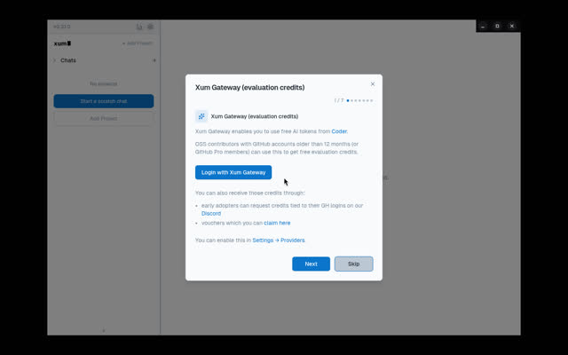

Leaderboard / #13 of 13 / Installed or launched
Mux (now 'Xum')
Coder users; not enough evidence to recommend more broadly.
Weighted feature assessment58.5range 36.0 to 81.0doc coverage 55% / Launchedmeasured: Launch probe
Scores by category
Rubric breakdown
- AAgent breadthweight 15n/r
- BIsolation and parallelismweight 153
- CReview, merge and PR flowweight 15n/r
- DRemote, cloud and mobile reachweight 10n/r
- EOpenness and licenseweight 104
- FMaturity and momentumweight 153
- GLinux setup friction (measured)weight 103
- HPricing and BYO modelweight 54
- IDocs and transparencyweight 5n/r
Verdict
Strengths and weaknesses
Strengths
- Launched fine on Linux
Weaknesses
- Rename to Xum; feature set unverified here
Evidence
What we saw and where it came from
- Hands-on (this box)
- Launched on Linux (6.1 s, 1.07 GB).
- Launch probe
- First window 6.08 s, process-tree RSS 1065 MB on Xvfb.
- Notes
- Repo renamed mux -> xum during 2026.

Feature facts
From docs, repos and our probes
- Platforms
- macOS, Windows, Linux AppImage
- Supported agents
- unknown
- Parallelism
- 'isolated, parallel agentic development' (repo description)
- Isolation
- unknown
- Review, merge, PR
- unknown
- Remote, cloud, mobile
- unknown
- MCP
- unknown
- Cost visibility
- App has a usage/stats icon; not verified
- Model choice
- Providers incl. Xum Gateway
- Setup
- Install app; onboarding offers gateway login (skippable)
"unknown" means we found no source and did not guess.